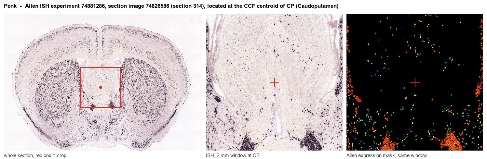
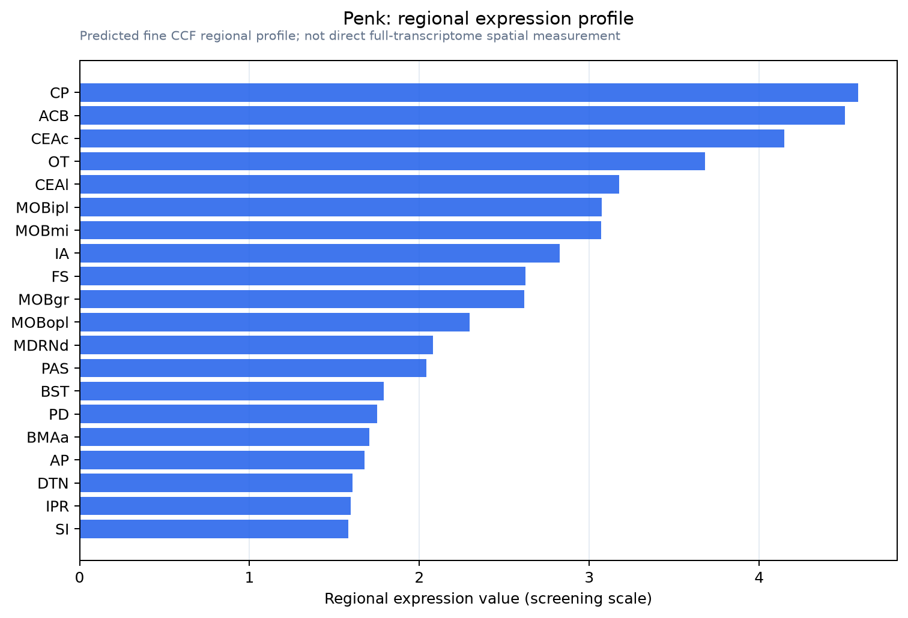

Penk
Spatial tier: RESTRICTED · Class: NEUROMODULATORY_SIGNAL · Top region: CP (Caudoputamen) · Positive regions: 24/554
44.3Discovery Score
42.6Targetability Score
CEvidence grade C
What this means: Penk: fine CCF profile is restricted toward CP (top regions: CP, ACB, CEAc, OT, CEAl; 24 positive regions); direct spatial validation is still required.
Function in CP: evidence, prediction, innovation
- Gene function
- PENK encodes proenkephalin, the precursor that is cleaved into the opioid peptides met-enkephalin and leu-enkephalin. These peptides act preferentially at delta- and mu-opioid receptors, which are Gi-coupled and inhibit adenylate cyclase, close calcium channels and open potassium channels, dampening neuronal excitability and transmitter release.
- Region function
- The caudoputamen is the dorsal striatum: GABAergic D1 direct-pathway and D2 indirect-pathway spiny projection neurons receive massive cortical glutamate and nigral dopamine and control action selection, habit formation and motor vigour.
- Published in this region
- direct Direct and classical. Penk is the defining peptide marker of the indirect-pathway, dopamine D2-receptor-expressing spiny projection neurons of the caudoputamen, and D2-receptor signalling bidirectionally sets its expression level: Wang & McGinty 1996 showed that D1 and D2 agonists oppositely regulate striatal preproenkephalin mRNA, and Dai et al. 2022 showed that D2-receptor manipulation bidirectionally regulates striatal enkephalin with consequences for cocaine reward. Matsumura et al. 2023 deleted Penk specifically from D2 neurons and found altered maintenance of conditioned cocaine reward.
- Predicted function
- Prediction: the open question is what enkephalin does at the striatopallidal terminal in real time rather than what regulates its expression. Because enkephalin is released volumetrically from indirect-pathway terminals onto mu-opioid receptors in globus pallidus, its predicted role is as an activity-dependent negative-feedback brake that prevents runaway indirect-pathway inhibition during sustained movement suppression. Conditional Penk deletion from Adora2a-Cre neurons should exaggerate pallidal inhibition and produce bradykinesia and reduced motor vigour under dopamine depletion, while local naloxone in globus pallidus should mimic this acutely.
- Innovation
- ★☆☆☆☆ 1/5 Striatal proenkephalin is one of the oldest and best-characterised molecular markers in basal ganglia neuroscience.
- Tools
- Penk-Cre and Penk-IRES2-Cre-neo mice (Allen/JAX), Penk floxed and Penk-null mice, Penk-GFP BAC reporters; opioid pharmacology naloxone, naltrindole (delta), CTAP (mu); enkephalinase inhibitors thiorphan and RB101; Adora2a-Cre and Drd2-Cre for pathway restriction.
- References
Direct evidence located at the region

Allen ISH experiment 74881286, section image 74826586 (section 314): the section that contains the CCF centroid of Caudoputamen according to the Allen image-to-atlas alignment (reference_to_image), with a 2 mm window around that point. Left: whole section, red box = window. Middle: ISH signal. Right: Allen's expression-mask view of the same window. open this image in the Allen viewer
Look it up yourself: Allen Mouse Brain ISH for PenkAllen reference atlas: CP (structure 672)ABC Atlas MERFISH viewer(in the ABC Atlas choose dataset MERFISH-C57BL6J-638850-CCF, colour cells by gene "Penk" or by parcellation_substructure "CP")All genes confined to CP + 3-D brain
Direct spatial evidence
MERFISH REGION LOCATOR

Regional expression figure

Predicted WMB × fine-CCF profile; not direct full-transcriptome spatial measurement.
Spatial profile
Evidence and specificity
- Evidence status
- PREDICTED_FINE
- Direct sources
- None; predicted localization only
- Exclusive threshold
- 12 positive regions out of 554
- Spatial specificity
- 0.331
- Top-region fraction
- 0.056
- Filter status
- PASS
Interpretation limits
- Cell-type-to-region projection is imputed expression, not direct spatial measurement.
- Adult reference atlases do not establish stability across age, sex, strain, state, or disease.
- Transcript abundance does not guarantee protein abundance or genetic-tool performance.